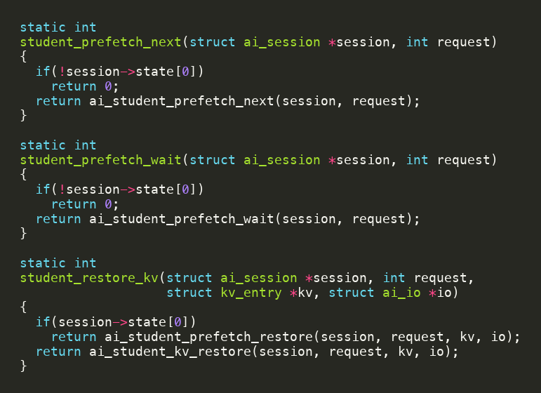
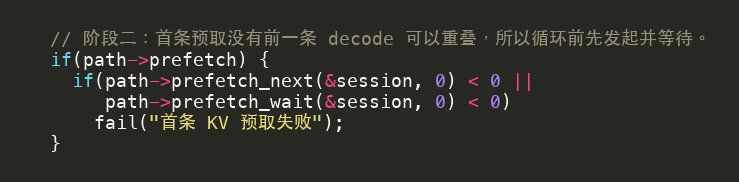
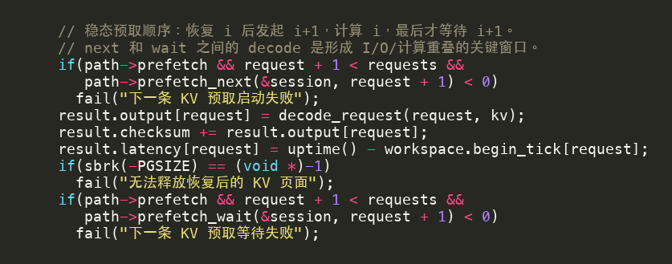
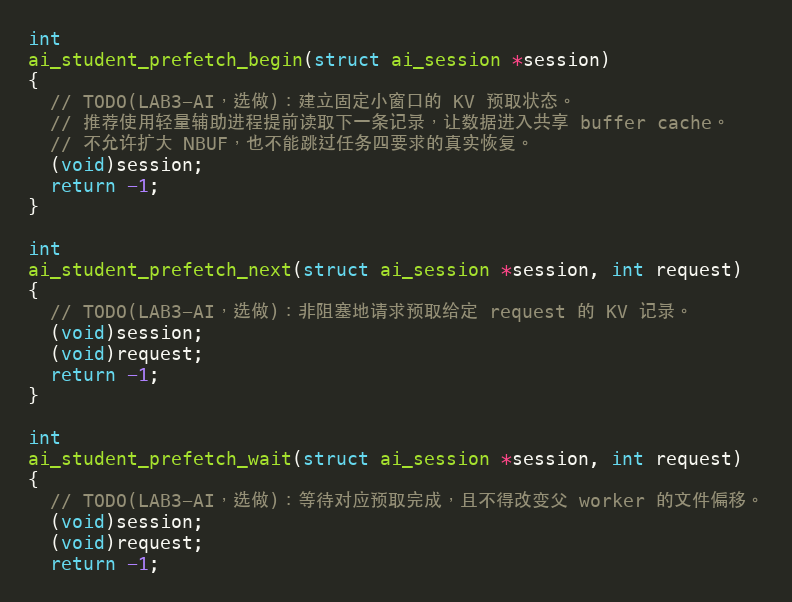

KV cache-aware prefetch¶
本任务在已通过模型、KV 和逐请求等价验证后再做，在 AI 附加题中计 4 分。先看下面的异步/流水线原理，再按接口和清理要求实现。
KV cache-aware prefetch：提前发起下一次读取，而不是减少读取次数¶
AI 附加题的 KV 任务要求 worker 把 KV 写入文件，并在 decode 前从文件中真实恢复。若所有动作都由同一个进程顺序执行，CPU 必须先等待 read() 完成，随后才能开始当前请求的 attention 计算。KV cache-aware prefetch（感知 KV 访问顺序的预取） 不减少这次读取，而是利用“请求按编号顺序恢复”这一事实，尽早开始下一条读取。
本节只建立概念，完整代码骨架和实现要求见下方实现指导
实现指导会具体说明父子进程、两条管道和接口骨架。建议先在这里理解时间线和状态机，再打开 TODO（待完成项）文件。
缓存和预取解决的不是同一个问题¶
初学者容易把 cache（缓存）和 prefetch（预取）当成同义词。它们都可能让将来的访问变快，但出发点不同：
| 技术 | 核心问题 | 典型动作 | 本实验中的例子 |
|---|---|---|---|
| 缓存（cache） | 同一数据以后还会不会再用？ | 第一次取得后保留副本 | 模型分片第一次读取后留在 student 模型缓存中 |
| 预取（prefetch） | 已知马上要用的数据，能否现在就开始取？ | 在真正消费前发起读取 | 计算 request i 时读取 request i+1 的 KV |
模型分片会被许多请求重复访问，因此适合缓存。每条 KV 记录在本 workload（工作负载）的 Decode 阶段只恢复一次，永久缓存全部记录既浪费内存，也会绕开“从文件恢复”的实验要求；它更适合用一个固定大小的小窗口提前读取。
这里的“cache-aware”也不是让你修改 xv6 的 buffer cache 算法。它表示预取器理解 KV 文件的组织与访问顺序：当前正在计算 i，下一条将需要的是 i+1，因此只提前准备这个确定会消费的记录。
“异步”到底是什么意思¶
“异步”描述的是调用后的执行关系。只有当
prefetch_next(i+1) 发起读取后立即返回，父 worker 不必等待读取完成、可以继续执行
decode_request(i)，并在稍后通过 prefetch_wait(i+1) 等待读取结果时，才形成了读取与计算的重叠。以计算
request i、预取 request i+1 为例：
错误：同步实现
父 worker：prefetch_next(i+1) ──等待整条记录读完──> decode(i)
（没有重叠）
正确：异步实现
父 worker：prefetch_next(i+1) -> decode(i) -> prefetch_wait(i+1)
↑ ↑
先计算当前请求 真正需要时再确认
辅助进程： 开始读取 i+1 ────────┘
如果 prefetch_next(i + 1) 在内部直接同步读完 2048 字节才返回，父 worker 就会停在第一行的箭头处，执行顺序仍是“读完再计算”。真正的实现应让 prefetch_next() 尽快提交一个请求（例如通过管道发给辅助进程），由辅助进程负责文件读取；父 worker 返回后继续执行当前 request 的 decode_request()，稍后再通过 prefetch_wait() 汇合。读取本身可以是阻塞的，但阻塞发生在辅助进程，而不是正在做 decode 的父 worker。
“发起”和“等待”因此必须是两个接口，调用顺序也很重要：
prefetch_next(i + 1) 提交工作，尽快返回
decode_request(i) 父 worker 做当前计算
prefetch_wait(i + 1) 真正需要数据前确认读取完成
如果 next() 后立刻调用 wait()，虽然程序使用了两个接口，父 worker 仍会先等待读取完成，再开始计算，时间线上依然没有重叠。
流水线怎样隐藏等待时间¶
上一节中的“父 worker 计算、辅助进程读取”就是这里所说的流水线：父进程负责当前 request 的 decode，子进程负责下一条 request 的文件读取。两者通过管道交接数据，因此读取和计算可以在时间上重叠。
设恢复一条 KV 记录的读取时间为 R，decode 的 CPU 计算时间为 C。
串行执行一条记录需要的时间近似为：
R + C
在稳定流水阶段，若下一条读取和当前计算真正重叠，这一段的理想时间接近：
max(R, C)
原因可以分三种情况理解：
R > C：计算先结束，父 worker 仍要等待剩余的读取时间；C > R：读取先结束，数据在窗口中等待，计算结束后可立即消费；R ≈ C：两者几乎同时完成，重叠收益通常最大。
不过 max(R, C) 只是上限模型。真实时间还包含发送请求编号、管道复制、进程调度、上下文切换、状态检查和错误传播，近似为：
max(R, C) + 通信与调度开销
所以“实现正确”不等于“在所有机器上都更快”。如果 KV 已命中 buffer cache，R 很小；如果 decode 计算很短，能覆盖的等待也很少。此时额外的进程和管道开销可能超过隐藏掉的时间。
单槽窗口：一次只让一条未来记录在途¶
本实验推荐固定的 单槽预取窗口。一个槽位只跟踪一条未来记录；它是父 worker 维护的“交接记录”，用来记住子进程正在读取哪一个 request，以及数据是否已经通过管道交付。状态可写成：
EMPTY
|
| next(request)
v
PENDING(request)
|
| wait(request)，并收到完整编号和 2048 字节数据
v
READY(request)
|
| restore(request)
v
EMPTY
三个状态分别表示：
| 状态 | 含义 | 此时允许的关键动作 |
|---|---|---|
EMPTY |
槽位没有待处理数据 | 对下一条确定的 request 调用 next() |
PENDING(request) |
父进程已把 request 发给子进程，子进程可能正在读取；父进程尚未确认完整结果 | 对同一 request 调用 wait() |
READY(request) |
子进程已返回编号和完整记录，父进程已通过管道接收并保存 | 对同一 request 调用 restore() |
注意，子进程不能直接把父进程内存中的槽位改成 READY：fork() 后普通用户内存彼此独立。只有父进程在 wait() 中收到完整数据并完成编号校验后，才能把自己的槽位从 PENDING 改为 READY。
状态机不是装饰。它能把常见错误在靠近源头的位置暴露出来：
PENDING时再次next()：上一条请求会被覆盖或两条回复无法区分；wait(j)与槽中request=i不同：这里的i是之前通过next(i)发给子进程、当前记录在槽中的 request 编号，j是本次wait(j)调用传入的编号。比如槽中仍是PENDING(5)，却调用wait(6)，说明父进程等待的对象与子进程正在读取的对象不一致，可能把数据交给错误请求；READY尚未restore()就再次next()：完整数据可能被下一条覆盖；EMPTY时调用restore()：父进程根本没有可交付的数据。
对于这些非法转换，接口应返回失败，而不是猜测调用者想做什么。
启动、稳态与排空¶
流水线并非从第一条记录起就处于理想稳态，它有三个阶段：
| 阶段 | 发生什么 | 为什么需要单独处理 |
|---|---|---|
| warm-up（启动） | 循环前 next(0)，随后 wait(0) |
没有更早的计算可以覆盖首条读取，request 0 必须先准备好 |
| steady state（稳态） | 恢复 i，发起 i+1，计算 i，等待 i+1 |
下一条 I/O 与当前计算发生重叠 |
| drain（排空） | 最后一条只恢复和计算，不再发起下一条 | 防止请求越界；结束时必须回收辅助进程和管道 |
以 request 0、1、2 三条请求为例，可以把父子进程的配合拆成下面几步：
启动：父 next(0) -> wait(0) -> restore(0)
子 读取 KV[0]
稳态：父 next(1) -> decode(0) -> wait(1) -> restore(1)
子 读取 KV[1] ─────────────┘ （读取与 decode(0) 重叠）
稳态：父 next(2) -> decode(1) -> wait(2) -> restore(2)
子 读取 KV[2] ─────────────┘ （读取与 decode(1) 重叠）
排空：父 decode(2)
（没有 request 3，因此不再调用 next）
第一条 KV 在父进程开始计算前就必须准备好，所以 KV[0] 没有可重叠的计算；中间两条可以分别被 decode(0) 和 decode(1) 覆盖；最后一条恢复后只执行 decode(2)，后面没有下一条读取可重叠。请求越少，启动和排空在总时间中的比例越大，预取越难显示出收益。
buffer cache 命中不等于父进程已经拿到数据¶
辅助进程调用 read() 时，xv6 可能把相关磁盘块装入内核 buffer cache。之后若父进程再次读取同一块，可能命中缓存。但要区分两层“准备好”：
- 内核块准备好：磁盘块已在 buffer cache 中；
- 预取槽准备好：父进程已通过管道收到正确的 request 编号和完整的 2048 字节 KV 记录。
只有第二种情况满足后，父进程才能把窗口标记为 READY(request)。buffer cache 命中仍可能经过系统调用、inode 锁、buffer 锁、内存复制和调度，并不等于零成本；更不能只凭“辅助进程读过”就假定父进程普通内存中的数组已经改变。
不要把父子进程误当成共享内存线程
fork() 后，父子进程拥有各自的用户地址空间。子进程写自己的全局数组，父进程看不到；数据必须经由管道等明确的进程间通信机制交付。进程与文件描述符会进一步解释这一点。
四个常见误区¶
| 误区 | 为什么不对 |
|---|---|
| “预取就是把所有数据缓存起来” | 预取关心开始时间；本任务必须保持固定小窗口并完成真实文件读取 |
“next() 里读完再返回也算异步” |
调用者没有机会并行计算，时间线仍是 R + C |
| “窗口越大越快” | 更大窗口占用更多内存、增加状态和错误处理，还可能把整个 KV 留在内存中而违反任务目标 |
| “命中 buffer cache 就没有 OS 成本” | 系统调用、锁、复制、管道和调度仍然存在，多 worker 下仍可能竞争 |
检查理解：为什么 next(i+1) 后不能立刻 wait(i+1)？
因为两者之间没有安排当前请求的计算。父 worker 会立即等待下一条读取完成，执行仍接近“读取后计算”的串行结构。正确位置是在 next(i+1) 与 wait(i+1) 之间执行 decode_request(i)。
检查理解：单槽处于 READY(5) 时能否直接 next(6)？
不能。request 5 的完整记录尚未被 restore(5) 消费，直接发起 request 6 会覆盖槽位含义。应先恢复 request 5，使状态回到 EMPTY，再发起 request 6。
下面进入预取接口、管道协议与清理的实现指导。
任务四：KV cache-aware prefetch（4 分）¶
只有 student 通路已经通过 aikvtest 和 aiinfer compare 后再开始本任务，否则同步 KV 恢复中的错误会被父子进程通信放大，难以判断问题究竟来自文件、请求顺序还是预取状态。
完成本节后，你应该能够：
- 沿
aiinfer.c说明next、wait、restore与 decode 的准确顺序； - 画出一个父 worker、一个辅助进程和两条单向管道；
- 用
EMPTY / PENDING / READY表示固定单槽窗口； - 解释
fork()后内存和文件描述符分别发生了什么； - 在任意失败位置关闭正确端点、结束辅助进程并避免僵尸进程；
- 用时间线而不只是运行时间证明读取确实与计算重叠。
若还不熟悉“异步”和“流水线”，可以先阅读下面的预取说明；本页后续小节会把接口和清理细节展开。
预取先记住这四点
- 缓存 是取得后留下副本；预取 是预计马上要用，提前发起读取。预取不会减少规定的 KV 读取字节数。
- 同步执行一条记录大致需要
R + C（读取时间加计算时间）；读取与当前计算重叠后，稳态耗时接近max(R, C)，还要加管道和调度开销。 - 单槽只允许
EMPTY → PENDING → READY → EMPTY，避免下一条记录覆盖尚未消费的数据。 - 首条记录属于 warm-up，最后一条属于 drain；只有中间 steady-state 才能把
next(i+1)放在decode(i)前面形成重叠。fork()后父子普通用户内存不共享，KV 必须通过管道交付。
先明确：prefetch 只替换 KV 读取控制方式¶
student 和 prefetch 不是两套完全不同的推理实现。查看 user/ai_student.c 可以发现，它们共享模型加载、KV 写入和清理入口；只有开启 prefetch 标志后，KV 恢复阶段才转入预取接口。
| 阶段 | student 通路 |
prefetch 通路 |
必须相同的语义 |
|---|---|---|---|
| 模型与 embedding | ai_student_model_load() |
同一个函数 | 分片内容、checksum、I/O 计数协议 |
| KV 写盘 | ai_student_kv_store() |
同一个函数 | 每个请求写入完整 2048 字节 |
| KV 读回 | 父 worker 同步 ai_student_kv_restore() |
辅助进程提前读，父进程等待并接收 | 仍从 student KV 文件真实读取同一记录 |
| decode | decode_request() |
同一个函数 | 每个 worker、每个 request 输出完全等价 |
| 资源清理 | student 模型与 KV 清理 | 先回收预取资源，再做相同清理 | 无残留 fd、文件或僵尸进程 |
下面的适配层就是两条通路的分叉点。state[0] 由框架设置，用于表示本次是否运行 prefetch 模式；不要在自己的代码中覆盖它。

图中有两个重要事实：
- 未启用 prefetch 时，
next()和wait()直接返回，restore()仍调用 KV 附加题的经典 student 实现； - 启用后，
restore()不能偷偷再次同步读取文件，它应消费已经由预取通路取得的完整记录。
预取不能改变原有语义
不得删除 KV 写盘、保留原 kv 指针、扩大 NBUF、把所有请求一次性读入内存，或修改 workload 跳过校验。prefetch 的 I/O 字节数、checksum 和逐请求输出必须与 student 通路满足相同协议。
从 workload 反推接口契约¶
不要先猜五个 TODO 函数该怎样写。先从调用者 user/aiinfer.c 看每个接口在什么状态下被调用。
首条记录：只有启动，没有重叠¶
写入阶段结束后，workload 进入 KV 读取阶段。prefetch 模式在循环前显式启动并等待 request 0：

这里必须等待，因为 request 0 之前没有可供父 worker 计算的请求。调用结束时，单槽应处于 READY(0)，接下来的第一次 restore(0) 才有数据可交付。
稳态：把当前计算放在 next 与 wait 之间¶
循环中的关键顺序如下：

把 request 记为 i，代码表达的是：
restore(i)
next(i + 1)
decode_request(i)
wait(i + 1)
逐步看：
restore(i)消费READY(i)，单槽回到EMPTY；next(i+1)把下一条编号交给辅助进程，单槽变为PENDING(i+1)；- 父 worker 立即执行
decode_request(i)，辅助进程同时读取 KVi+1； - 当前计算结束后才调用
wait(i+1)；若辅助进程已完成，等待很短，否则父进程阻塞到完整数据到达； wait()成功后单槽变为READY(i+1)，下一轮可以恢复。
最后一条请求没有 i+1，因此条件判断会跳过 next() 和 wait()，流水线自然排空。
五个学生接口与单槽状态¶
TODO 文件给出了五个入口，每个入口只负责一类状态转换：

| 接口 | 进入时的典型状态 | 成功后的状态 | 主要职责 |
|---|---|---|---|
ai_student_prefetch_begin |
尚未建立预取资源 | EMPTY |
创建管道和辅助进程，初始化 fd、pid、编号和窗口 |
ai_student_prefetch_next |
EMPTY |
PENDING(request) |
验证编号并把 request 发给辅助进程；不能在此同步等完 2048 字节 |
ai_student_prefetch_wait |
PENDING(request) |
READY(request) |
接收并验证返回编号，再精确接收完整 KV 记录 |
ai_student_prefetch_restore |
READY(request) |
EMPTY |
把槽中记录复制到 workload 新申请的 kv 页，成功后更新读取字节数 |
ai_student_prefetch_end |
任意可清理状态 | 已关闭 | 通知停止、关闭端点、等待子进程并复位所有预取状态 |
你需要为每个 worker 保存至少以下 概念状态，但字段名和布局由你设计：
辅助进程 pid
父进程持有的请求写端
父进程持有的数据读端
当前 pending request（若没有则为无效值）
当前 ready request（若没有则为无效值）
一个固定大小的 KV 接收缓冲区
初始化是否完成、是否发生错误
struct ai_session 的 state 与 memory 为学生实现预留，但 state[0] 已被适配层用作 prefetch 模式标志。可以把额外状态放在其余槽位或自行申请的一小块固定内存中；不要按 request 数量申请越来越大的数组。
为什么使用一个辅助进程和两条管道¶
xv6 用户态没有课程可直接使用的线程库，但有 fork()、pipe()、read()、write() 和 wait()。一种清晰、可验证的设计是：每个父 worker 只创建一个辅助进程，用两条单向管道组成请求—应答协议。
请求管道
父 worker -- request 编号 ----------> 辅助进程
| |
| 继续执行 decode(i) | 从自己的只读 fd 读取 KV
| |
+<-- 完成编号 + 2048 字节 KV -----------+
数据管道
为什么需要两条？因为 xv6 的一条 pipe 表示一个单向字节流。父进程要向子进程发送编号，子进程又要向父进程返回数据；分别使用两条管道能让方向和所有权一目了然。
推荐的最小消息协议为：
| 方向 | 消息 | 用途 |
|---|---|---|
| 父 → 子 | 一个 request 编号 | 指定下一条应读取的 KV；可约定一个负数表示停止 |
| 子 → 父 | 完成 request 编号 | 防止父进程把迟到或错序回复当成当前数据 |
| 子 → 父 | 紧随其后的 2048 字节 KV | 交付完整记录；不足 2048 字节必须失败 |
pipe 是字节流，不保证一次 read(fd, buf, 2048) 就返回 2048 字节。因此编号和 KV 都要使用经典链路讲过的精确读写循环。不要用“单次 read 返回较短结果”表示一条消息结束。
先在纸上写出一轮协议
父发送整数 3；子验证期望编号为 3；子精确读取 KV[3]；子先回传整数 3，再回传 2048 字节；父先验证编号，再把完整数据放入 READY(3)。只要其中一步失败，本轮不能被记为成功。
管道端点所有权¶
pipe(fd) 生成 fd[0]（读端）和 fd[1]（写端）。fork() 后父子进程起初都继承四个端点，必须立即关闭自己永远不用的两端。
| 进程 | 请求管道 | 数据管道 | fork() 后应立即关闭 |
|---|---|---|---|
| 父 worker | 保留写端 | 保留读端 | 请求读端、数据写端 |
| 辅助进程 | 保留读端 | 保留写端 | 请求写端、数据读端 |
多余端点不仅浪费 fd，还会改变 pipe 的结束语义。例如父进程等待数据管道 EOF，但自己仍保留一个数据写端，即使辅助进程退出，内核仍认为“还有写者”，父进程可能永久阻塞。
可以在实现前画下面这张检查表，并在每条错误路径上逐项划掉已关闭端点：
request_pipe[0] 子读，父关
request_pipe[1] 父写，子关
data_pipe[0] 父读，子关
data_pipe[1] 子写，父关
父进程实现骨架¶
下面只给出控制结构，不给出可直接提交的字段布局和完整 C 代码。请把每条“验证”落实为明确的条件和失败返回。
prefetch_begin(session):
验证当前 worker 尚未初始化 prefetch
创建请求管道；失败则返回
创建数据管道；失败则关闭第一条管道
fork
若 fork 失败：关闭两条管道的四个端点
若位于子进程：关闭子进程不用的端点，进入 helper_loop
若位于父进程：关闭父进程不用的端点
保存父端 fd 和子 pid
把 pending、ready 设为无效值，把窗口设为 EMPTY
prefetch_next(session, request):
验证 request 在 [0, session->requests) 内
验证窗口为 EMPTY，且编号符合顺序
精确写出 request 编号
只有写出成功后才记录 PENDING(request)
立即返回，不从数据管道读取 KV
prefetch_wait(session, request):
验证窗口为 PENDING(request)
精确读取完成编号并与 request 比较
精确读取一条完整 KV 到固定窗口
只有两次读取都成功后才记录 READY(request)
prefetch_restore(session, request, kv, io):
验证窗口为 READY(request)，kv 与 io 有效
把固定窗口中的完整记录复制到 kv
完整交付后增加 io->kv_read_bytes
清除 ready 编号，回到 EMPTY
prefetch_end(session):
若已初始化，通知辅助进程停止
关闭父进程持有的请求写端和数据读端
对辅助进程执行 wait
复位 pid、fd、pending、ready 和初始化标志
需要你自己决定并解释的关键细节包括：停止消息怎样编码、某次接收一半失败后怎样使会话不可继续、end() 如何在“只创建了一条管道”或“fork 失败”的半初始化状态安全运行。
辅助进程实现骨架¶
辅助进程只做一件事：按父进程发来的顺序，从当前 worker 的 KV 文件读取完整记录并回传。
helper_loop(session, request_read, data_write):
根据 session->worker 得到本 worker 的 KV 文件名
重新 open 一个只读 fd
准备一条记录大小的固定 scratch 缓冲区
expected = 0
循环：
从请求管道精确读取一个 request
若为停止编号：跳出循环
验证 request == expected 且没有越界
从辅助进程自己的 fd 精确读取 2048 字节
向数据管道精确写出完成编号
向数据管道精确写出 2048 字节记录
expected++
释放 scratch，关闭文件和管道端点，exit
这段骨架故意没有给出错误码协议。最小实现可以让辅助进程在不可恢复错误时关闭数据写端并退出，父进程会从短读或 EOF 发现失败；更完整的实现也可以设计显式状态字段。无论采用哪一种，父进程都不能把不完整记录标记为 READY。
为什么推荐顺序读取
若 KV 附加题采用“每 worker 一个顺序 KV 文件”，request 以 0、1、2……到达时，辅助进程可沿自己的 fd 顺序读取，不需要 lseek()。若你采用每请求文件，也必须保持相同的 request 校验和完整读取语义，并在报告中说明文件组织。
fork() 后：什么共享，什么不共享¶
这是本任务最容易误解的部分。
普通用户内存不共享¶
fork() 后子进程得到父进程地址空间的副本。两者可以看到相同的初始值，但之后对子进程全局数组或堆内存的写入不会自动出现在父进程中。
因此下面的想法不可行：
子进程把 KV 写进全局 prefetched_kv[]
子进程把 ready = 1
父进程直接读取同名数组和变量
父进程读到的是自己的副本。正确做法是由子进程通过数据管道发送记录，父进程接收到自己的窗口后再标记 READY。
内核 buffer cache 可以被父子进程共同受益¶
虽然用户内存分离，两者的文件读取都经过同一个 xv6 内核和 buffer cache。辅助进程提前读取可能让相应磁盘块进入内核缓存。但这只说明块可能已缓存，不代表父进程已经取得完整 KV，也不替代管道消息和编号校验。
继承的文件描述符可能关联同一打开文件状态¶
在 Unix 语义下，fork() 继承的 fd 可能引用同一个打开文件对象，读操作会推进共享的文件偏移。如果父进程的同步恢复 fd 与辅助进程交替读取同一打开状态，请求很容易错位。
一个稳妥原则是：辅助进程根据 worker 文件名 自行打开只读 fd，并只由辅助进程使用这个 fd。父进程不再用它同步恢复；预取通路的 restore() 只消费管道送达的数据。这样“谁推进哪一个偏移”是明确的。
错误与清理矩阵¶
并发程序的正确性不仅是成功路径。建议实现 begin() 时按资源获得顺序记录状态，end() 则按“只处理已经获得的资源”清理。
| 失败位置或异常 | 父进程应做什么 | 子进程/状态注意点 |
|---|---|---|
第一条 pipe() 失败 |
直接返回失败 | 此时没有端点可关闭 |
第二条 pipe() 失败 |
关闭第一条管道两端 | 不得调用 wait() |
fork() 失败 |
关闭两条管道四端 | 没有子 pid，不得等待不存在的进程 |
子进程 open() 或 sbrk() 失败 |
父进程从数据管道 EOF/短读发现失败 | 子进程关闭已持有端点并 exit |
| 请求编号错序或越界 | 本次调用失败，会话不再继续交付 | 不得把错误编号写入 pending/ready |
| 管道短读/短写 | 循环直到完整；<= 0 才失败 |
半条消息不能算成功 |
| 回复编号与等待编号不匹配 | 返回失败，不复制数据、不计 I/O | 防止把 KV 交给错误请求 |
PENDING 尚未完成就结束 |
发送停止可能已太晚，应关闭端点并等待 | 设计清楚子进程在写管道阻塞时怎样退出 |
| 子进程提前退出 | 关闭父端并 wait() 回收 |
不得反复等待同一 pid |
| 正常结束 | 发送停止、关闭父端、wait()、复位 |
防止留下僵尸进程和脏全局状态 |
不要让 end() 依赖成功走到最后一轮
aiinfer 的失败路径可能在任意阶段终止。清理函数应能识别“未初始化、部分初始化、已有子进程、端点已经关闭”等状态，避免二次关闭有效 fd 或对无效 pid 调用 wait()。
怎样证明实现真的发生了重叠¶
仅比较“prefetch 比 student 快”不能证明异步正确，因为 buffer cache 热度和调度噪声也会改变运行时间。先检查结构性证据：
prefetch_next(i+1)位于decode_request(i)之前；prefetch_wait(i+1)位于decode_request(i)之后；next()只发送请求并返回，没有在内部接收完整 KV；- 辅助进程在父 worker 计算期间执行文件读取；
- 单槽状态严格经历
EMPTY → PENDING → READY → EMPTY； prefetch_restore()不再对 KV 文件执行同步读取。
可以在调试版中临时打印少量事件，例如 P next 4、H read 4、P wait 4，观察相对顺序。确认后应删除高频打印，否则控制台 I/O 会严重扰动吞吐和 p95。
常见故障怎样定位¶
| 现象 | 优先检查 |
|---|---|
prefetch 一启动就失败 |
TODO 标志、两条 pipe、fork、子进程 KV 文件名和只读 open |
| request 0 正确，第二条开始卡死 | 父子管道端点方向、是否关闭多余写端、子进程是否继续循环读取请求 |
| 运行到管道传输时失败 | 是否对编号和 2048 字节数据使用精确读写；scratch 是否足够大 |
| 输出 checksum 不一致 | 返回编号校验、顺序文件偏移、restore 复制长度、READY 是否被覆盖 |
| 单 worker 正确，多 worker 错误 | 状态是否跨 worker 共享、文件名是否含 worker 编号、是否误用同一临时文件 |
| 输出正确但没有加速 | next() 是否同步读完、wait() 是否放得过早、decode 是否太短、KV 是否已命中 buffer cache |
| 结束后 shell 卡住 | 停止消息、管道端点关闭顺序、子进程是否阻塞写数据、父进程是否漏 wait() |
| 多次运行后失败 | fd、页面、子进程或临时文件是否泄漏；全局状态是否在 end 中复位 |
不要一开始就增加复杂测试。先用 2～3 条请求检查事件顺序，再运行指导书已有的 compare 和性能命令即可。
性能结果为什么可能变慢¶
prefetch 新增了：
- 创建和回收辅助进程；
- 父子进程调度与上下文切换；
- 管道中的 request 消息；
- 2048 字节数据从子进程经内核 pipe 缓冲复制到父进程；
- 额外 fd、状态检查、等待和错误传播。
如果 KV 已在 buffer cache 中，原同步读可能非常短；如果 decode_request() 的 CPU 计算时间不足以覆盖读取，流水线也只能隐藏一小部分等待。此时 prefetch 变慢仍可能是合理结果。
预取评价的是实现与分析，不承诺固定加速
只要 prefetch 输出等价、I/O 合法、窗口固定、时间线确实重叠且资源完整回收，即使某台机器上吞吐下降，也应保留真实数据并解释辅助进程、管道复制、调度和 buffer cache 热度的影响。
编码前自检¶
为什么不能让子进程写父进程的普通全局数组，并只回传一个 ready 标志？
fork() 后普通用户地址空间分离。子进程写的是自己的数组和标志，父进程看不到；必须通过管道等 IPC 把数据交付给父进程。
为什么返回消息还要带 request 编号？
pipe 只提供有序字节，不知道这些字节属于哪个逻辑请求。编号让父进程验证回复与当前 PENDING(request) 匹配，防止错序数据被静默交给错误请求。
为什么辅助进程最好重新打开 KV 文件？
这样它拥有明确独立的只读访问状态，不会与父进程继承的恢复 fd 交替推进同一文件偏移。预取 restore 只消费管道数据，所有权更清晰。
next() 成功写出一半 request 编号后失败，能否仍设为 PENDING？
不能。消息未完整提交，辅助进程无法可靠解释；调用应失败并让会话进入清理路径，不能把这次操作当成成功状态转换。